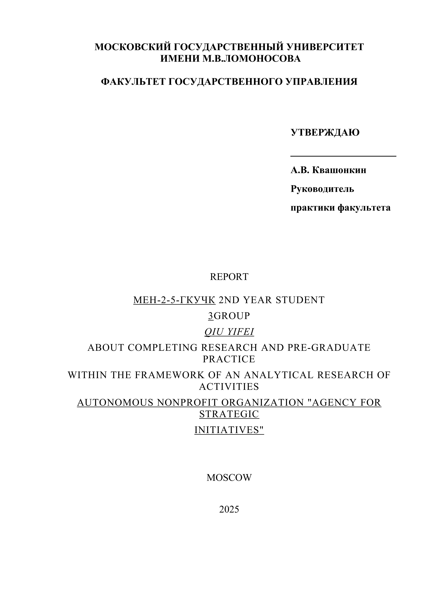
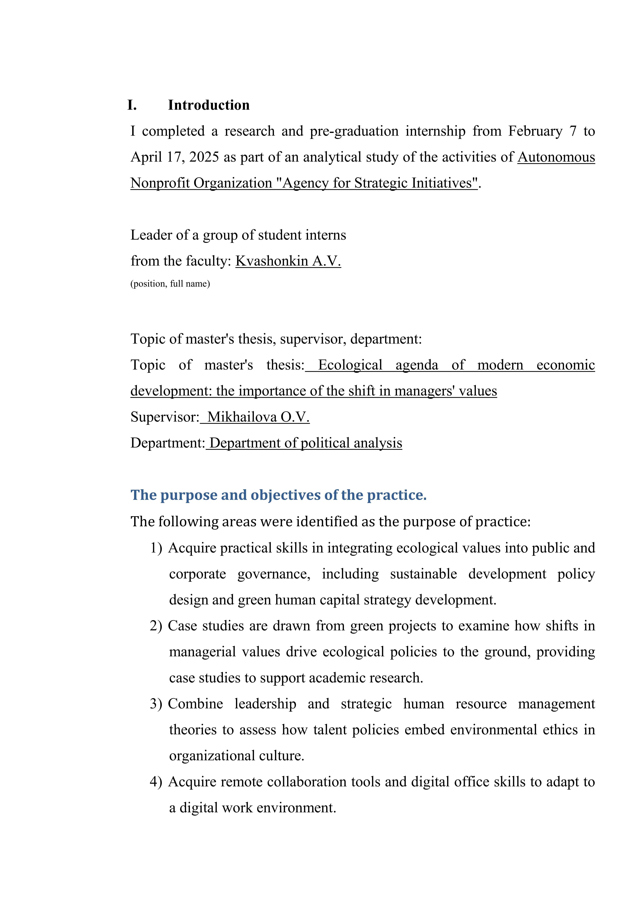
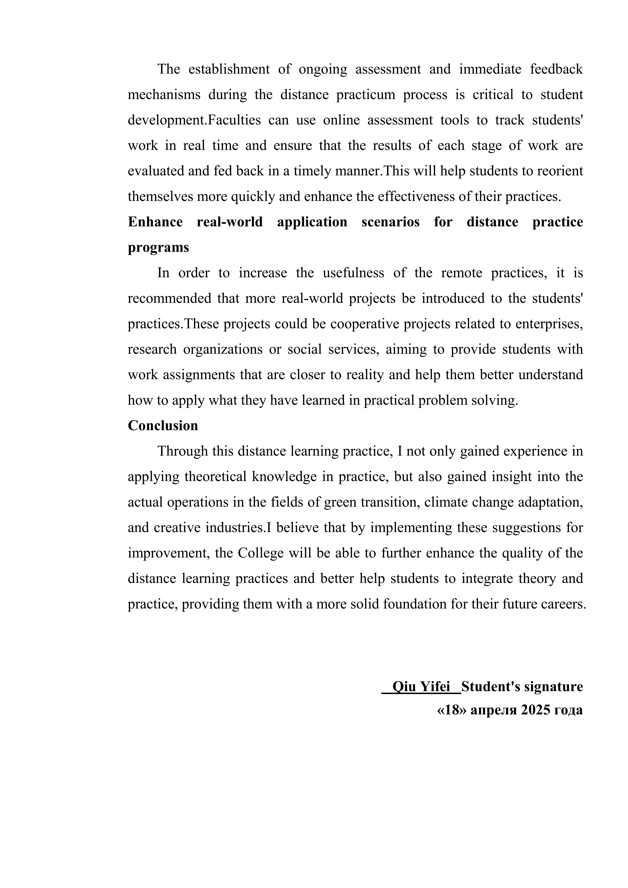
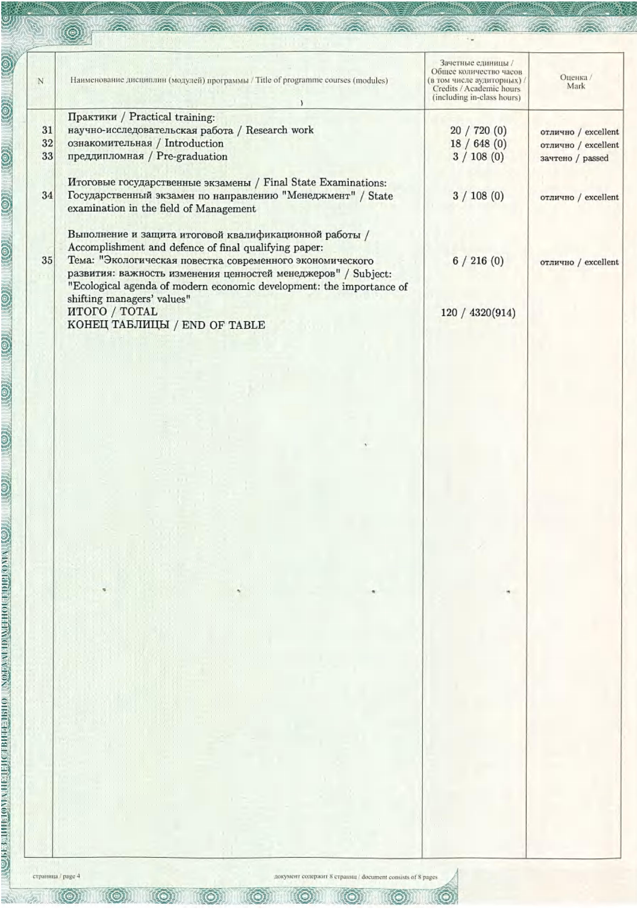

✕
可持续发展战略研究实习生
俄罗斯战略倡议署（ASI）是由俄罗斯政府设立的国家级自治非营利机构，致力于推动经济社会领域的战略性创新与可持续发展，在科技创业、环境保护、生活质量提升等领域发挥「变革推动者」的关键作用。
本段实习与硕士论文研究方向「现代经济发展的生态议程：管理者价值观转变的重要性」高度吻合，将学术研究与组织实践有效结合。通过亲历国家级战略机构的人才政策研究，深化了对绿色 HR 战略的理解，也为论文提供了真实的组织案例支撑。
点击图片可放大查看



